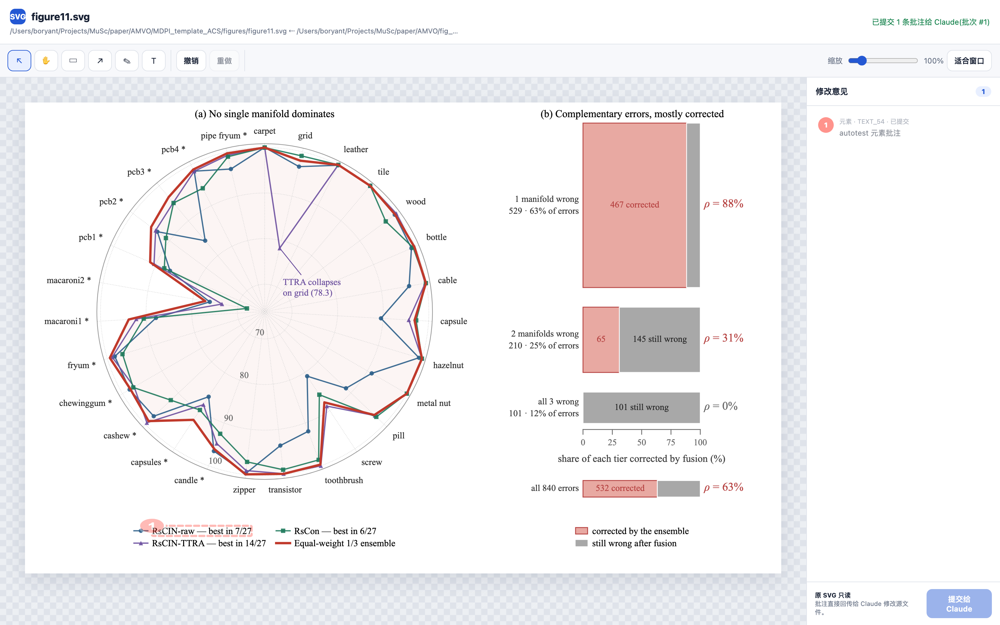

{
"kind": "element",
"note": "图例第一行挪到面板右上角",
"target": {
"id": "text_54",
"text": "RsCIN-raw — best in 7/27",
"ancestors": ["figure_1", "legend_1", "text_54"],
"bbox_svg": [87.91, 293.06, 68.95, 7.07]
},
"geometry_svg": { "x": 87.93, "y": 293.08, "w": 68.93, "h": 7.08 }
}